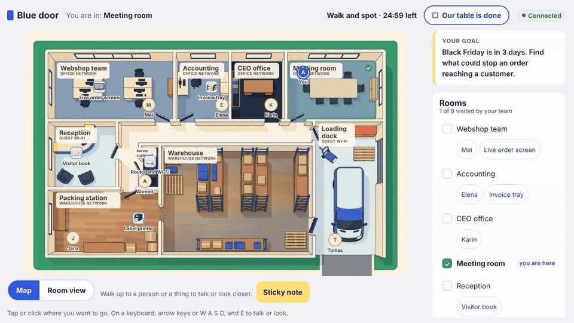

What it is
Teams of three to five students walk through Nordknit, a fictional family-owned clothing company in Sunds, Denmark. They talk to the people who work there, look closer at the things on their desks and stick notes on whatever could go wrong. Then the bad day begins: a clock, messages, an alert and clues in the rooms. Each team votes on what the CEO should do, and the projector shows which team saw which problem coming. The CyPro words for what they found come last.
It runs in any browser, on phones and laptops, without accounts. The game was designed for the MSc in Engineering, Technology-Based Business Development, at Aarhus University in Herning.
How a class plays
| Step | 45 min | 90 min | What happens |
|---|---|---|---|
| Join | 5 | 5 | Scan the code, pick a nickname and a face, sit at a team table |
| Story | 3 | 5 | The CEO explains what is at stake |
| Walk and spot | 12 | 25 | Walk as your character, ask questions, write sticky notes |
| The day | 15 | 30 | The incident unfolds; follow clues and merge notes |
| Vote | 3 | 5 | Decide what the CEO should do right now |
| Debrief | 7 | 20 | Compare teams, learn the CyPro names, download your threat table |
For teachers
Paper kit
Floor plan, character cards, note sheets and answer key to print if the network fails.
Black Friday · New bank detailsPilot plan
How to test the game with a class: observer checklist, consent text and a usability survey.
Read the planTwo scenarios so far
Black Friday
Orders have stopped printing three days before the biggest sales day. A printer on the guest Wi-Fi, a stranger in reception and a shared admin password.
New bank details
The factory says it has not been paid. A fake e-mail changed the bank account and nobody checked the biggest payment of the autumn.
Built to be easy
Everything is designed for phones first and checked at six screen sizes from 320 to 1920 pixels. Text is written in plain English, colours meet WCAG AA, buttons are at least 44 pixels, and the whole game can be played with a keyboard. Sessions delete themselves six hours after they start, or when the teacher closes them.